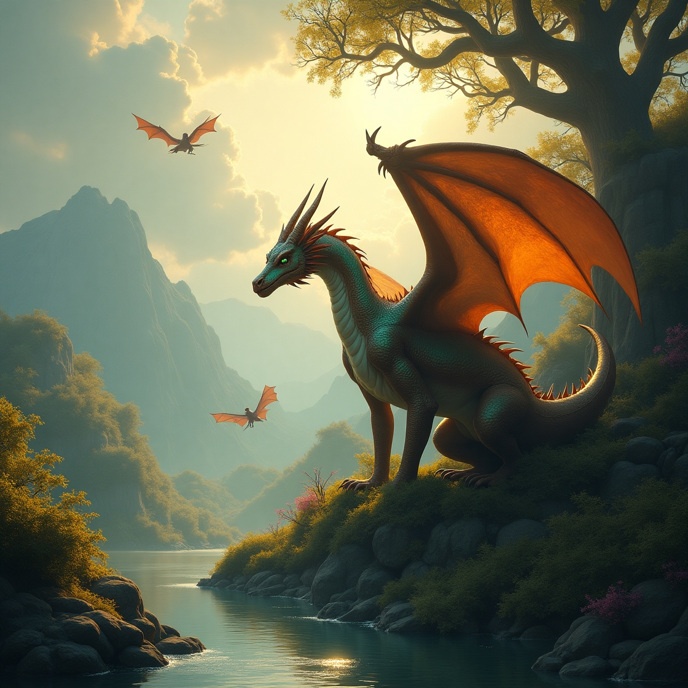
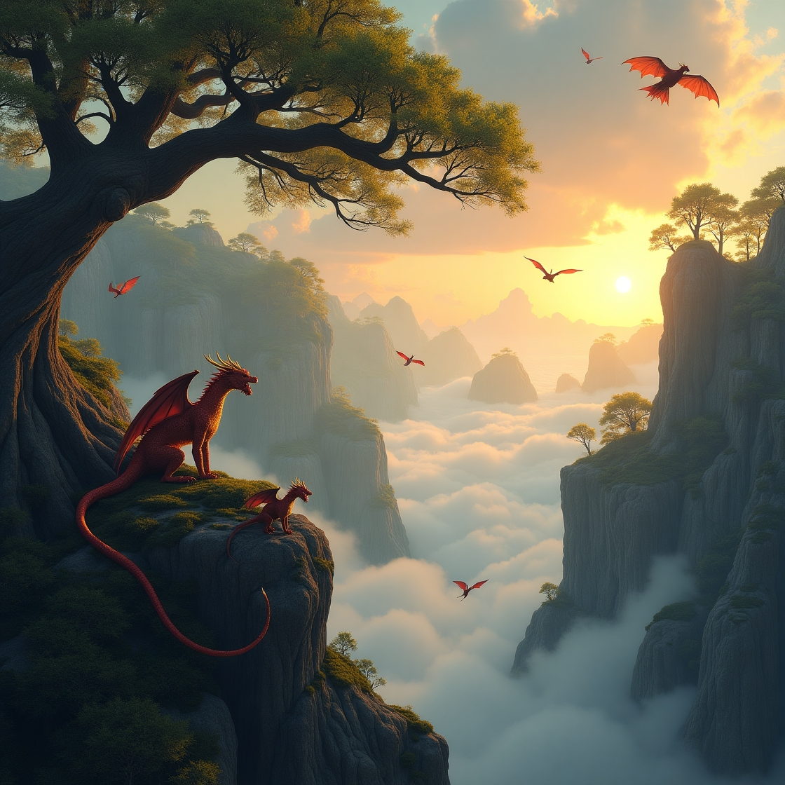
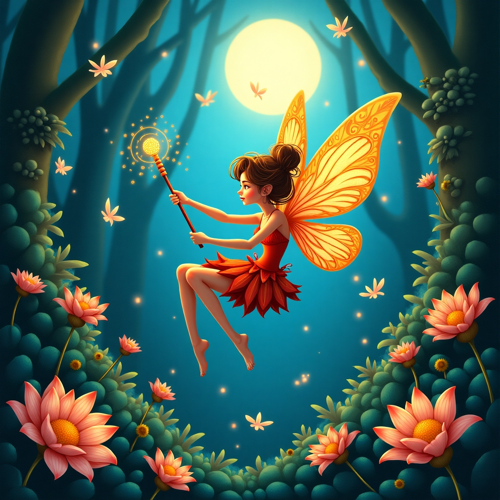
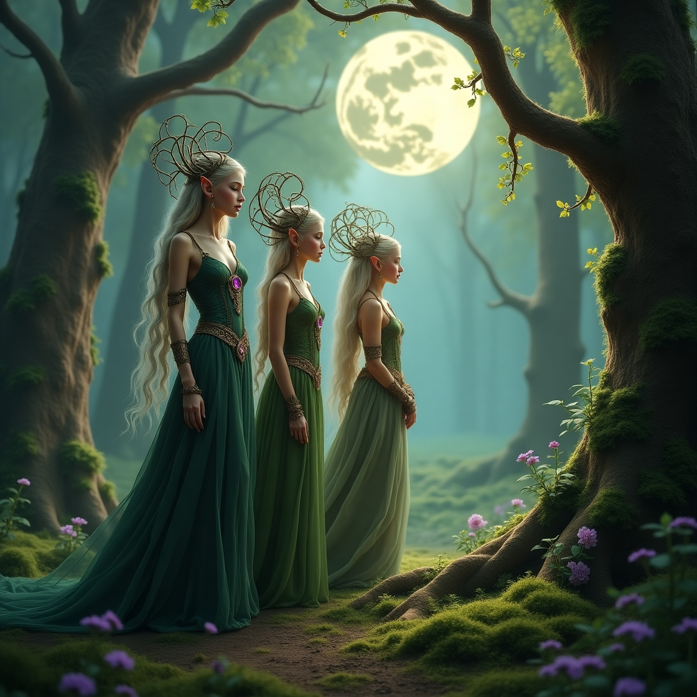
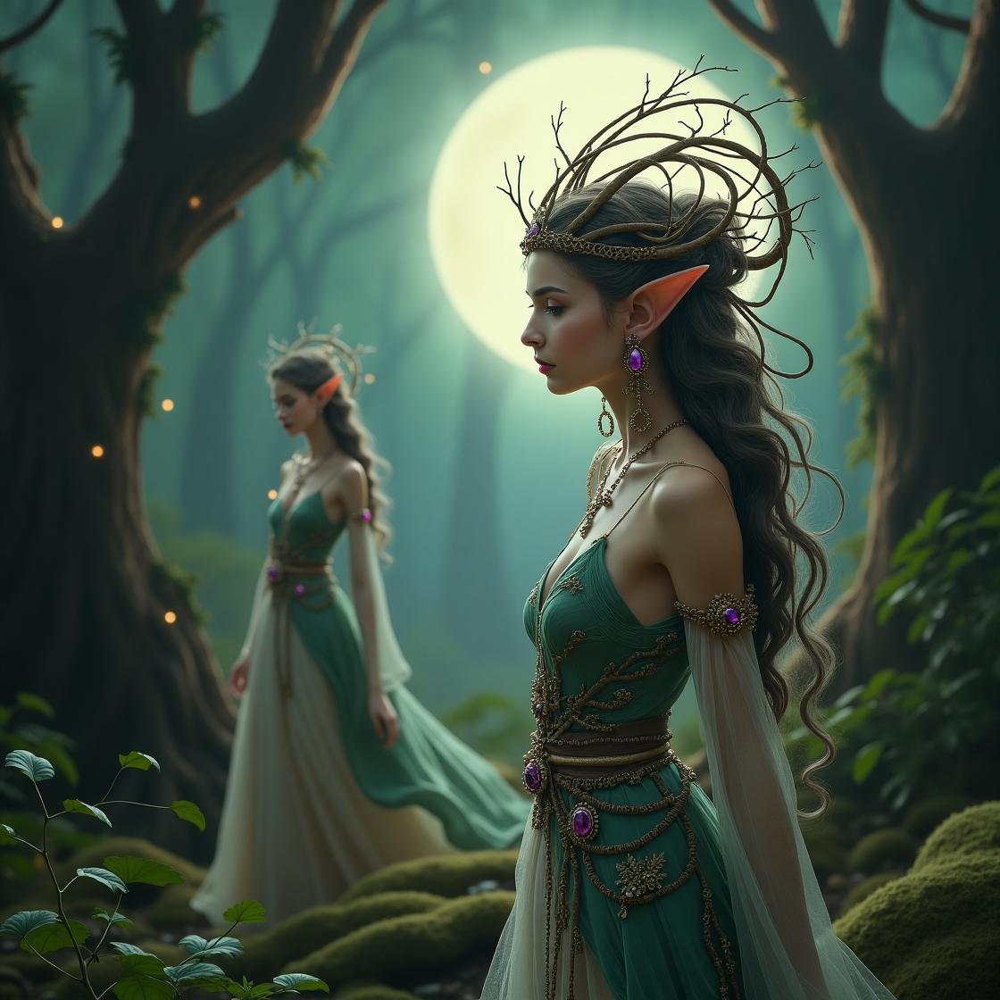

Дракон
Дракон це істота яка дуже популярна в цьому світі на горі драконів яка находиться за мертвим лісом у долині щастяюВони можуть досяти різних розмірів від карликових(2м) до великих(35м). У них є свої види і їх дуже багато сотні є 1 найрідший і найсильніший Місячний дракон який має ріст 123м!Та я його сила це володіння гравітацією та водою.Ще є вогняні дракони самі прості яких ми привикли бачити! Вони всього лиш 7м.Плюються вогнем та люблять зробити шашлик з вікінгівюТа ще один приклад дракони природи вони мирні і не завдають шкоди тим хто не зачіпає вони роблять плохо.Так як вони мають ріст 30м і контролюють природою.Але не всі дракони живуть на Горі Драконів. Деякі з них літають далеко за межі долини, шукаючи пригод або охороняючи древні секрети. Серед них є ще один особливий вид — Електродракони ⚡. Вони швидкі, мов блискавка, і можуть зникати та з’являтися за долю секунди. Їхній ріст — 15 метрів, і вони можуть створювати бурі, керувати блискавками та навіть виводити з ладу механізми. Є ще один легендарний вид — Тіньові дракони 🐉🌑. Їх майже неможливо побачити, бо вони можуть ставати невидимими. Вони з’являються лише вночі та в тумані. Вважається, що вони охороняють стародавні ворота до інших світів. Їхній ріст — 25 метрів, але вони здаються більшими через темряву, яку створюють довкола себе. Але найбільша таємниця — це Крижаний Дракон ❄️. Про нього ходять лише легенди. Він спить у глибинах льодовикової печери й прокидається раз на тисячу років. Його дихання заморожує цілі міста, а дотик — перетворює все на кришталь. Кажуть, що його ріст — понад 150 метрів, але жоден мандрівник не повернувся, щоб це підтвердити...
 Фея
Феї — це чарівні істоти, що живуть у Лісах Мрій 🌳, які розкинулися за Райдужним Озером 🌈 біля Гір Дощів ⛰️. Вони бувають різного зросту: від крихітних, як нігтик (5 см) 🧚♀️, що літають на пелюстках, до великих, як люди (1.7 м) 👩. У кожної феї є своя стихія й сила. Найпоширеніші — це Квіткові феї 🌸, які лікують рослини, розмовляють з бджолами 🐝 та пахнуть весною. Водяні феї 💧 живуть у краплях роси, озерах і водоспадах, вміють створювати веселки та дихати під водою, їхній голос — як дзюрчання струмка. Іскрові феї ⚡ — шалені пустунки, які залишають за собою слід світла й уміють керувати вогнем та блиском, а ще вони допомагають зіркам світися вночі ✨. Феї Вітру 🍃 літають разом із бурями, керують повітрям, створюють легкі вітерці або страшні вихори, якщо розсердяться. Також існують Ранкові феї 🌅, що будять квіти світанком, і Феї Снів 😴, які прилітають уночі та приносять дітям добрі сни. Але найрідкісніша з усіх — це Фея Місячного Сяйва 🌙. Вона з’являється лише в повню, має волосся зі срібла, сяйво навколо, зріст 2 метри та силу зупиняти час, лікувати душу і показувати майбутнє у снах. Кажуть, якщо вона торкнеться серця — воно стане чистим, як світло місяця.

Ельфи
Ельфи — це витончені та чарівні істоти, які живуть у зачарованих лісах 🌲, де дерева сягають небес, а повітря наповнене піснею вітру 🎶. Вони мають стрункі тіла, блискучі очі та загострені вушка. Є лише один вид ельфів — Лісові ельфи, але вони настільки мудрі й багатогранні, що кожен з них унікальний. Їхній зріст зазвичай від 1.7 до 2.2 метра, а живуть вони до 800 років. Ельфи вміють говорити з тваринами 🦌, лікувати дерева 🌳 і керувати природною магією ✨. Вони — майстри луку 🏹, надзвичайно спритні та непомітні. Їхнє волосся зазвичай сріблясте або золотисте, а очі — мов коштовне каміння 💎. У кожного ельфа є своє дерево-друг, яке росте разом із ним і зберігає його спогади. Їхній лідер — Велика Елларіель, володарка Листяного Трону, здатна пробудити цілий ліс одним подихом. Ельфи добрі, але оберігають свій світ від чужинців, тому побачити їх — велика рідкість і справжня честь.
 